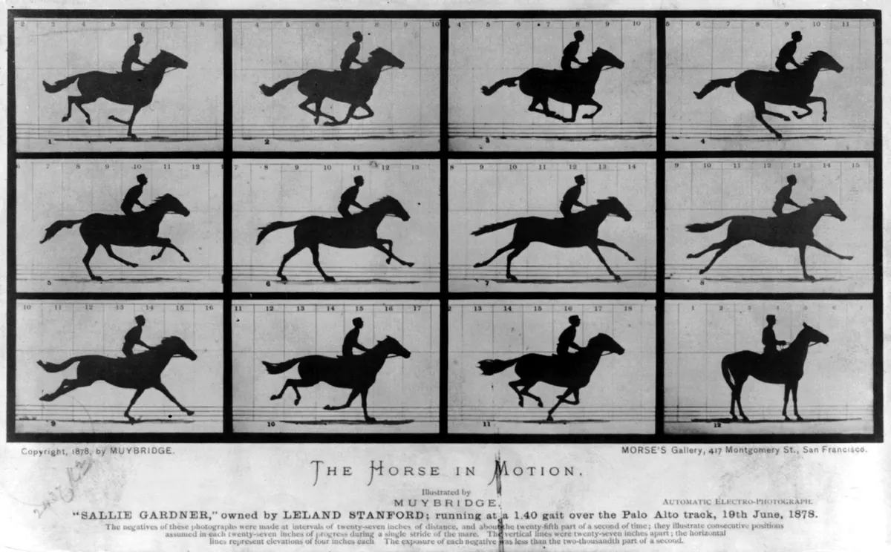
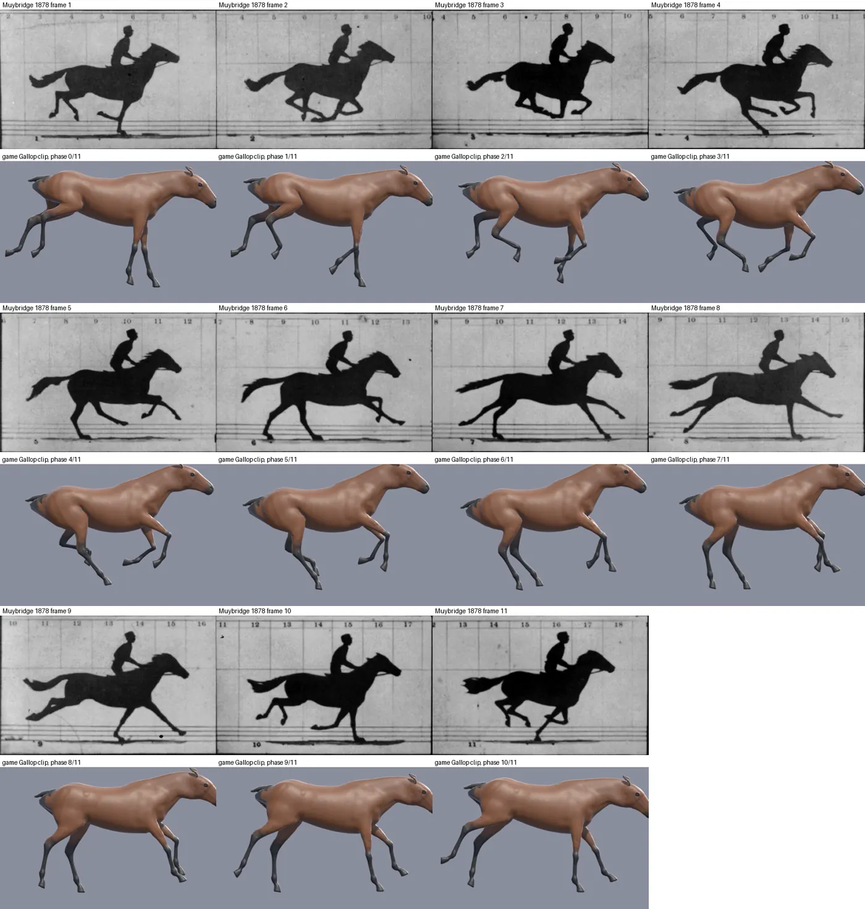
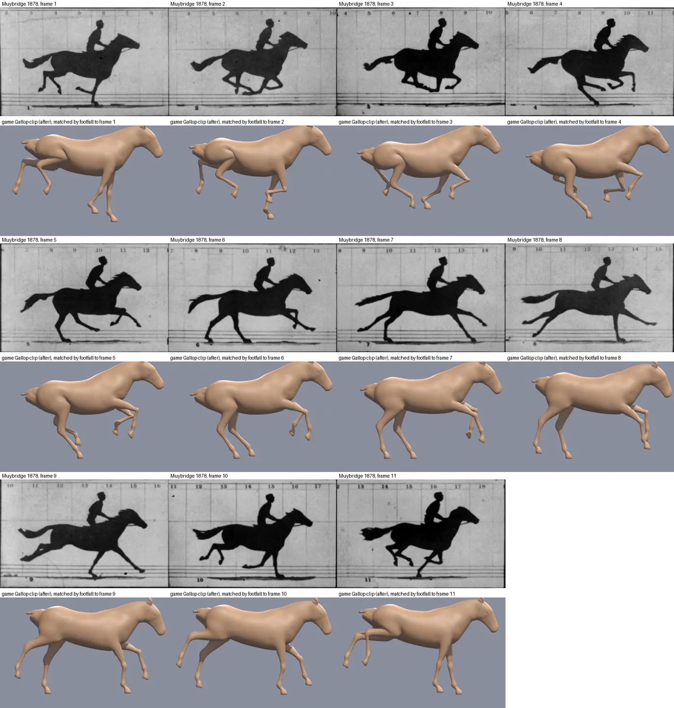

A jousting game lives or dies on its horses. You spend every course looking at one from behind or from the side, at full gallop. If the legs are wrong, you feel it even when you cannot say why.

The photograph that settled it
For centuries painters drew galloping horses with their legs flung out front and back, like a rocking horse. In June 1878 Eadweard Muybridge set a row of cameras along a track at Palo Alto and photographed the mare Sallie Gardner at full gallop. The frames showed two things nobody had seen. All four hooves do leave the ground at once. But they do it with the legs folded under the body, not stretched out.
That is exactly the kind of evidence we want for Joust Revival. It is public domain, it is measured against a ruled backdrop, and it shows one full stride, frame by frame.
What was wrong with ours
We rendered our gallop in the same side-on view as Muybridge's camera and put the two in rows, one above the other. Side by side, the problems were obvious.

- In the moment of suspension the legs stayed long instead of folding under the belly.
- Hooves on the ground slid, because the foot did not move back at the same speed as the ground.
- The landing did not reach forward to meet the ground.
- The neck was carried low, and the whole body did not rock over the stride.
Fixing it, footfall by footfall
We matched each of Muybridge's frames to the moment in our clip where the same hoof touches down or lifts off, then re-posed the legs at those moments. For each leg we solve the chain of joints from shoulder or hip down to the hoof, so knees and hocks bend the way a horse's do. Only the leg bones change; the rest of the animation, its timing and its length stay as they were, and a check script makes sure of it.
Then the carriage. The neck now rides about 40 degrees above horizontal with the face about 55 degrees below it, bobbing in time with the stride. The body rocks about 3 degrees over the seat. A hoof on the ground now moves back at exactly ground speed, so it plants and does not skate.

The horse itself
A good gallop on a wrong horse still looks wrong. So before the legs, we traced the horse. We laid photographs of real horses, side-on and head-on, over the model and moved its outline until it matched: a neck that runs low and forward into a deep breast, the throat latch, a convex forehead, a deep jaw, the eye in its true place. Measured on the side outline, the average distance between the model and the photo dropped by about 70 per cent; on the head, by about half.
Then the legs: a flatter knee and cannon bone, a real fetlock joint, a sloped pastern, the hoof set forward, the point of the hock. And the four breeds stand at the heights and weights of 15th-century horses: the destrier at 15.2 hands and 540 kg, the courser at 15.0, the Andalusian at 14.3 and the rouncey at 14.1 hands and 420 kg.
The reference photographs come from Wikimedia Commons under their own licences (public domain, CC BY and CC BY-SA). They are used only as tracing references and are not shown or shipped in the game.
What is next
The rider. From real jousting footage we measured how much a knight moves in the saddle at the gallop: about 5 centimetres up and down, about one degree of lean. Riders sit very still; most of what you see is the horse pitching under them. That goes into the physics overhaul we are building now, together with the horse hair and coats.
You can see the new gallop in the game today. Ride a course and watch your horse from the side in the replay.